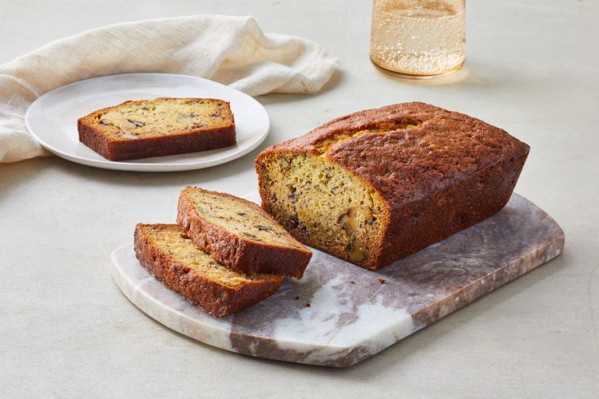

Banana Bread

Description
Rich and moist banana bread with hints of cinnamon.
Ingredients
- 1 stick butter
- 1/2 cup sugar
- 2 eggs
- 1 1/2 cups flour
- 3 very ripe bananas, mashed
- 1 tsp baking soda
- 1 tsp vanilla
- 1 tsp cinnamon
Steps
- Preheat oven to 350 degrees. Butter a 9-by-5-by-3-inch loaf pan; set aside. In an electric mixer fitted with the paddle attachment, cream butter and sugar until light and fluffy.
- Add eggs and beat to incorporate.
- In a medium bowl, whisk together flour and baking soda. Add to the butter mixture and mix until just combined.
- Add bananas, cinnamon and vanilla; mix to combine.
- Pour into prepared pan and bake until a cake tester inserted into the center of the cake comes out clean, about 1 hour 10 minutes.
- Let rest in pan for 10 minutes, then turn out onto a rack to cool.